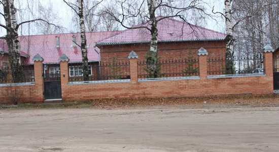
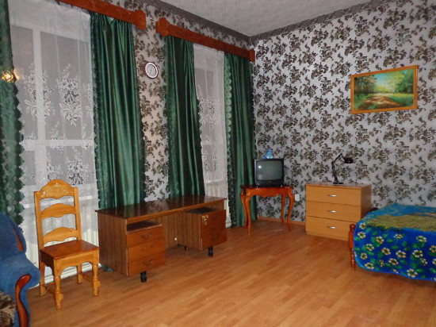

Лыжи, дети, Великий Устюг.
Да, мы знаем красивое место, где есть снег. Да, есть снег на Новый год. Есть снег на школьные каникулы в марте. Много снега. Белого, пушистого. Место где все еще есть мороз и солнце. Речь про Великий Устюг. Если вы не в курсе, это невероятно красивый город. Судите сами: две реки Юг и Сухона сливаются вместе, образуя Северную Двину. И в этом месте стоит город с десятками церквей, старинных купеческих домов. На самой стрелке Юга и Сухоны расположен за белокаменной стеной Троице Гледенский монастырь. Вот здесь, на просторе северных рек мы предлагаем покататься на обычных беговых лыжах. Не просто покататься, а сходить на лыжах в настоящую северную избу, где будет топиться русская печь, посетить резиденцию Деда Мороза... Замечу, что Великий Устюг не только знаменит своей северной красотой, не только может похвастаться снегом, но и … не зависит от курса евро, легко достижим на поезде как из Петербурга так и из Москвы, а его посещение не требует заграничного паспорта и визы.

Итак, наша новая программа. Она рассчитана на семейный отдых. Детей берем (с родителями) от 8 лет. Дистанции, что нам придется преодолевать не большие. Даже если вы не умеете кататься на лыжах, то этот маршрут все равно для вас. Так как в первый ходовой день после приезда у нас запланировано катание на местной лыжной базе, где возможен как прокат лыж, так и обучение. На маршруте сопровождает опытный лыжник. Поможет, научит. Конечно, если вы сильно катаетесь, и мечтаете о многокилометровых прогонах, то этот маршрут вам не подойдет. Мы работаем и над маршрутом для вас, но пока — вариант для детей и их родителей.

Чем особенно хорош Устюг? Здесь можно совместить катание и культурную программу. Зимой темнеет рано. Сходили на лыжах в светлое время к той или иной достопримечательности, а вечером, который тут наступает после обеда, можно посетить один из Устюжских музеев. Есть музеи более детские, как например, музей новогодней игрушки, или музей природы края, а есть и более «серьезные», как исторический музей (город основан в 1147 году, ровесник Москвы). Еще один бесплатный бонус — Великий Устюг стоит на высоком берегу реки. Местная детвора давно освоила его склоны для катания на санках. Санки можно взять с собой. Наиболее удобные — санки-ватрушки, которые можно перевозить в сложенном состоянии, а по приезду просто надуть.

Где будем жить?
А в доме, фотографии которого приведены ниже. Дом недавно отреставрирован в русском провинциальном стиле. Находится почти в самом центре города. Комнаты предусматривают проживание семьями. У кого семья 2 человека, а у кого — 4. В доме тепло, уютно. Есть кухня, где можно готовить. Хотя можно отправится и в город, в кафе или рестораны. Из достоинств отметим свою территорию, обнесенную забором, из недостатков, душевая располагается на этаже.


Как добраться?
Добраться до Великого Устюга довольно просто: поездом из Москвы или Петербурга до станции Ядриха (Котлас), где мы вас встретим и отвезем (53 км) до места проживания. Поезд из Петербурга выходит в 9-50 утра, из Москвы в 12-30, а прибывают в Устюг утром, в 9 часов. Инструкцию по билету пришлет гид.
Поехали?
Итак, программа:
День 1. В этот день вы садитесь на поезд, и отправляетесь в дальний путь.
День 2. Утром мы встречаемся в Котласе, переезжаем в Устюг. Размещаемся в домике, днем знакомимся с городом, при свете дня. Вечером проводим совместный ужин, орг. собрание и инструктаж. Завтра на лыжи!
День 3. В этот день у нас такая программа: мы едем в лес. Но не в глухой лес-тайгу, а в лес, где находится лыжная база. Здесь наша программа такая: те кто уже умеет и любит кататься, получат возможность покататься на трассе. Те, кто катается плохо, пройдут инструктаж. Здесь же можно взять лыжи в прокат. Надеюсь в этот день будет холодно. Почему? Вечером задумана баня. Хорошо в баню с морозца...
День 4. 12 км. Это интересный день. Утром мы спустимся к Сухоне прямо в городской черте, станем на лыжи, и пойдем к месту слияния рек Сухона и Юг. Мы увидим самую красивую панораму на Устюг — его белоснежные храмы, стоящие над рекой. На месте слияния Сухоны и Юга мы осмотрим Гледенский монастырь, и зайдем к нашим знакомым в настоящую северную избу. Да, изба немного покосилась. Ну, так она старая! Да, в ней стоит русская печь. Да, мебель тут тоже старая. Можно посмотреть, как жили северяне много десятилетий назад. Но это не музей. Здесь до сих пор живут наши знакомые. Вечером у нас по плану ужин, а до ужина — баня.
День 5. 12 км. Поход к Деду Морозу. Многие дети знают, что не все Деды Морозы настоящие. Есть не настоящие. К чему обманывать детвору? Настоящий Дед Мороз один, и живет он в Устюге. Вот в его резиденцию мы и отправимся. На лыжах. Опять мы спускаемся на Сухону, и идем на лыжах вдоль берега. Теперь в другую сторону. На красивом берегу реки, в окружении леса стоит резиденция настоящего Деда Мороза. Здесь довольно интересно: есть тропа сказок, есть питомник с животными. Тут и олени и лисы, медведи и белки. Словом, много северной фауны. После возвращения — ужин.
День 6. В этот день у нас музейная программа. Утром мы еще можем немного покататься по Сухоне на лыжах вдоль набережной Устюга. А далее нам предстоит посещение музеев и мастер класса по резьбе по бересте.
День 7. Все хорошее рано или поздно заканчивается. В этот день мы прощаемся с Устюгом и уезжаем домой.
Стоимость маршрута можно посмотреть на странице «Календарь».
В стоимость входит:
проживание в Великом Устюге
трансфер с железнодорожной станции до Устюга и обратно
все завтраки, кроме дня приезда
работа гида
дневной чай в ходовые дни. У гида будут с собой термоса с горячим чаем, печенье, конфеты.
баня на второй день
мастер класс по резьбе по бересте
В стоимость не входит:
вечернее питание
проезд до Великого Устюга
входные платы в музеи
прокат (если нужно) лыж